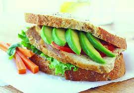

Avocado Breakfast Sandwich

Description
Make this egg and avocado sandwich for a delicious restaurant-style breakfast at home! It's quick, easy, and delicious.
The sliced avocado is what makes this sandwich pop and gives it a unique flavor.
It is chock-full of protein, as well, so this sandwich will keep you full until lunchtime
Ingredients
- Olive Oil
- Eggs
- Salt and Ground black pepper to taste
- Butter, softened
- Italian bread
- Swiss cheese, sliced
- Cheddar cheese, sliced
- Ripe avocado, sliced
Steps
- Heat olive oil in a skillet over medium heat. Crack eggs into skillet; cook for 1 to 2 minutes.
Flip and cook egg until done, 2 to 5 minutes more. Transfer eggs to a plate and season with salt
and pepper.
- Spread butter onto 1 side of each bread slice.
- Heat a skillet over medium heat. Lay bread slices in the hot skillet, butter-side down. Quickly
layer Swiss cheese, 1 fried egg, Cheddar cheese, 1 fried egg, avocado, and remaining bread slice,
butter-side up. Carefilly flip sandwich to grill other side until golden brown, 3 to 4 minutes.
- Remove sandwich from skillet and cut in half